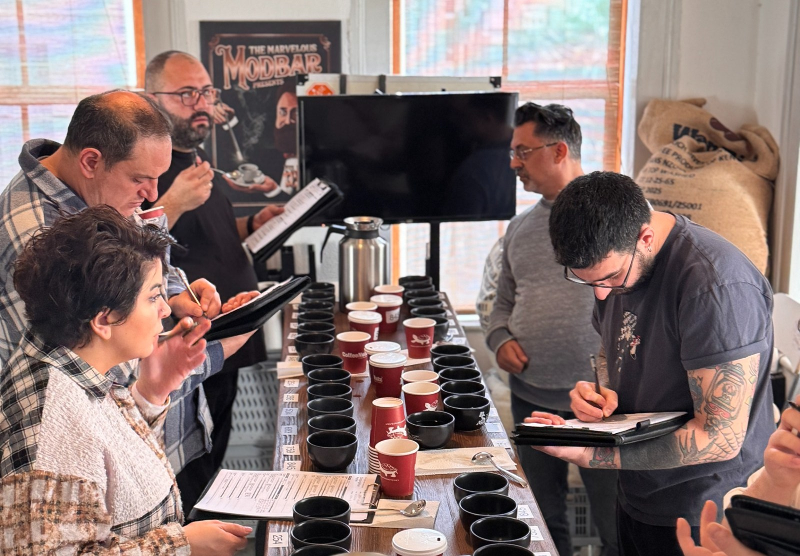

Ömer Aydın
is a coffee roaster and educator based in İzmir, Türkiye, and an Authorized SCA Trainer and Q Instructor. Coffee education without borders.
Upcoming training
Watchthe film
Film
Watch on YouTube
From the classroom · CoffeeNutz, İzmir
Explore the courses
Course format, certification and availability are confirmed for each offering.
-
Barista Skills
-
Roasting
-
Sensory Skills
-
Brewing
-
Q Grader
What learners say
Your instructor
Coffee roaster and educator based in İzmir, Türkiye. My approach connects coffee science, sensory experience and practical skills through professional coffee education.
- Authorized SCA Trainer
- Q Instructor
- Zurich University of Applied Sciences (ZHAW) · CAS Coffee Excellence

Training dates
International course dates will be announced here as they are confirmed.